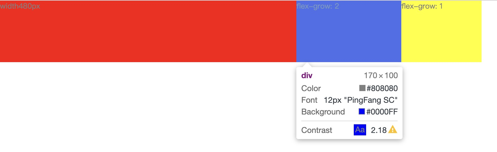

inline元素、inline-block元素、block元素的区别
inline元素根据宽度横向排列，block元素默认独占一行；inline元素无法设置上下外边距(margin)、width、height，block元素可以设置四个方向的外边距和元素的width、height；inline-block元素则融合了inline元素和block元素，可以像inline元素横向排列以及像block元素设置四个方向的外边距以及width、height；
效果图如下：

代码如下：
1 | <div> |
我们给inline元素设置四个方向外边距，只有左右的外边距才显示出了效果。
flex-grow容易忽略的坑
我们先看看flex-grow的定义：
flex-grow属性定义项目的放大比例，默认为0，即如果存在剩余空间，也不放大。
如果所有项目的flex-grow属性都为1，则它们将等分剩余空间（如果有的话）。如果一个项目的flex-grow属性为2，其他项目都为1，则前者占据的剩余空间将比其他项多一倍。
根据定义我们可以得知，当在flex容器内给容器内的项目设置不同的flex-grow，可以根据比例设置项目的空间；
先看第一个例子：
flex容器宽度为780px，容器内有三个项目，第一个项目固定宽度480px，剩下的两个项目根据比例分配。
效果图如下：

代码如下：
1 | <div style="display: flex;color: grey;width: 780px;"> |
从效果图得知，除了固定宽度的项目，另外两个项目的宽度并未按照我们所想的那样分配。
重新去看定义，分配“_剩余空间_”似乎并不是我们理解的那样，具体这个“_剩余空间_”是如何计算我并未具体去研究，在这里先说说如何解决这个问题。
- 当剩余两个项目内不存在内容的时候，分配的空间就是正确的；
效果图如下：
代码如下：
1 | <div style="display: flex;color: grey;width: 780px;"> |
当我们把除了固定宽度外的项目的内容去掉，分配的空间比例就是正确的，但是这种解决方法肯定不是我们想要的。
- 给剩余两个项目设置
flex-basic: 0;
效果图如下：
代码如下：
1 | <div style="display: flex;color: grey;width: 780px;"> |
在这里当我们给除了固定宽度外的项目加上flex-basic: 0后，分配的空间就是我们所期望的那样了。
如果我们需要使用flex-grow来分配flex容器内的项目，一定要注意设置flex-basic。因为这里的“_剩余空间_”和flex-basic相关。
下面我们看看flex-basic的定义：
flex-basic属性定义了在分配多余空间之前，项目占据的主轴空间（main size）。浏览器根据这个属性，计算主轴是否有多余空间。它的默认值为auto，即项目的本来大小。
当我们一个flex容器内的项目同时存在flex-basic和flex-grow，这个项目的宽度为flex-basic的值加上flex-grow所分配到的空间。
还是以上面的代码举例，假如我们给两个项目的flex-basic设置值为30px和60px
则剩余两个容器的宽度分别为：
width1 = ((780 - 480 - 30 - 60) * 2 / 3) + 30 = 170
width2 = ((780 - 480 - 30 - 60) * 1 / 3) + 60 = 130
效果图如下：

代码如下：
1 | <div style="display: flex;color: grey;width: 780px;"> |
多个class样式的时候如何取值？
当某个div元素上class的值为a b c的时候，最后的样式是如何计算的？
1 | <div class="a b c"></div> |
这个问题我们讨论的前提是同样的样式属性；
- 不考虑权重的情况下，
a b c最终决定元素的样式为加载的顺序，哪个class最后加载则显示为哪个class的效果，和书写顺序无关。
- 当
a b c都在同一个文件的情况下，哪个定义在最后，则以最后的为准；
1 | .c { |
- 当
a b c在不同的文件的情况下，哪个文件最后加载，则以最后的为准；
1 | <link rel="stylesheet" href="cssC.css"> |
如果某个
class中设置了!important，则直接以!important的为准。其他时候则按照选择器的权重来计算样式。
- 本文链接：https://welldeng.github.io/2019/08/10/CSS%E5%AE%B9%E6%98%93%E5%BF%BD%E7%95%A5%E7%9A%84%E4%B8%80%E4%BA%9B%E7%9F%A5%E8%AF%86%E7%82%B9/
- 版权声明：本博客所有文章除特别声明外，均默认采用 许可协议。
若没有本文 Issue，您可以使用 Comment 模版新建。